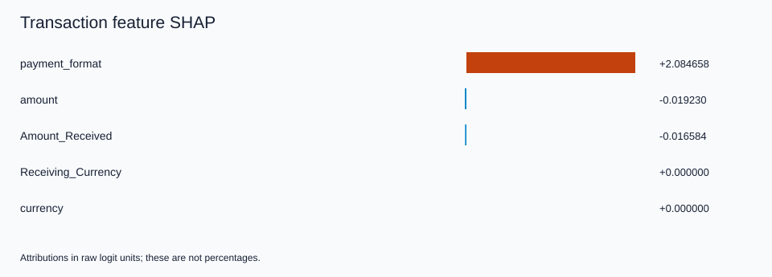
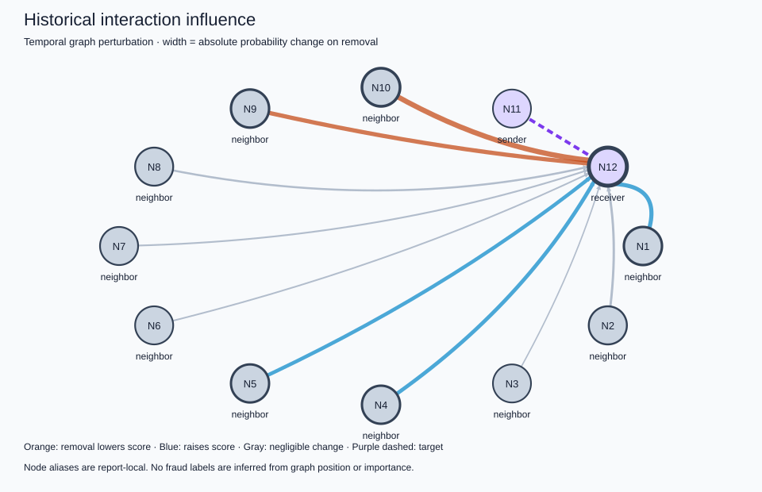

============================================================
TRANSACTION XAI
============================================================
Transaction: 3594822
Bank: JPMorgan_Chase
MODEL PREDICTION
Fraud model score (uncalibrated): 0.000000697
Prediction: LEGITIMATE (threshold 0.010321403)
PREDICTION PARITY
Existing evaluation: 0.000000697
XAI: 0.000000697
FEATURE CONTRIBUTIONS (raw logit units)
1. payment_format = ACH +2.084658
2. amount = 291.83 -0.019230
3. Amount_Received = 291.83 -0.016584
4. Receiving_Currency = USD +0.000000
5. currency = USD +0.000000
TEMPORAL EVIDENCE
Recent completed batches examined: 8
Events involving sender/receiver in that window: 135
Time since sender's last recorded event: 52247.5 seconds
Time since receiver's last recorded event: 2073.0 seconds
Window volume by currency: {'USD': 184689.53000000003}
IMPORTANT HISTORICAL INTERACTIONS
Event 3591516: delta probability on removal = -0.000000024
Event 3589280: delta probability on removal = -0.000000019
Event 3537737: delta probability on removal = +0.000000018
Event 3554382: delta probability on removal = +0.000000016
Event 3557646: delta probability on removal = +0.000000015
Event 3548410: delta probability on removal = -0.000000007
Event 3587770: delta probability on removal = -0.000000005
Event 3582145: delta probability on removal = +0.000000003
Event 3563799: delta probability on removal = -0.000000002
Event 3548962: delta probability on removal = -0.000000001
GRAPH EVIDENCE
Evaluated historical edges: 10
Nodes represented, including target endpoints: 12
Method: temporal graph perturbation (not GNNExplainer)
INTERPRETATION
payment_format contributed positively relative to the sampled training reference, with account memory fixed.
amount contributed negatively relative to the sampled training reference, with account memory fixed.
Amount_Received contributed negatively relative to the sampled training reference, with account memory fixed.
Suppressing the most influential tested historical event changed the score by -0.000000024.
Temporal counts and volumes describe observed history; they are not independently attributed model features.
This explanation describes model behavior and does not establish that the transaction is actually fraudulent.
FIDELITY / STABILITY
Retained-window-subgraph absolute score error: 0.000000082
Background-resampling top-feature Jaccard: 1.0
LIMITATIONS
Model explanations do not establish fraud or causality; scores are uncalibrated.
Feature SHAP holds account memory fixed; static node-feature attribution is not implemented.
Temporal graph perturbation is a bounded replay intervention, not GNNExplainer. Earlier anchor memory remains intact.
Interventional SHAP hybrids can be unrealistic for correlated fields; exactness is relative to the sampled background.
Legacy preprocessing reproduces current original evaluation and saved metrics; original fitted objects were not preserved.
The original fixed-size batching and timestamp-tie behavior are preserved.
This explanation uses a federated continual checkpoint. The model was not trained with a formal differential-privacy mechanism.
============================================================